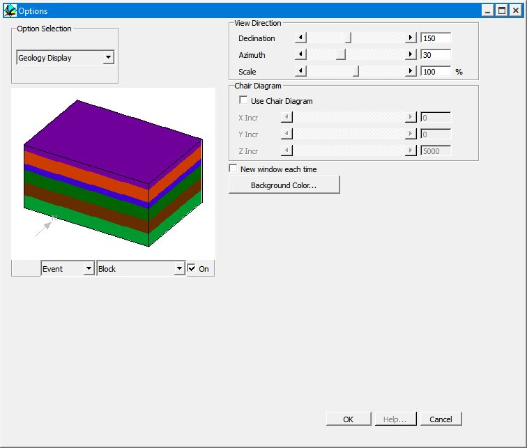

Geology display options
This window allows the user to define the parameters which control the specific viewing parameters for the 3 dimensional geological visualisations.
It is also possible to interactively alter the Declination and Elevation options by clicking and dragging the cursor within the, Block Diagram, 3D Topo and 3D Triangulation windows. Dragging the cursor horizontally alters the Declination, dragging the cursor vertically alters the Azimuth.

| GROUP | NAME | FUNCTION |
|---|---|---|
| Chair Diagram | Use Chair Diagram | Draw Block Diagrams with rectangular cutouts |
| X | X position of lower north east corner of cut out | |
| Y | Y position of lower north east corner of cut out | |
| Z | Z position of lower north east corner of cut out | |
| New Window Each Time | Create new display window each time a geological visualisation is calculated (this happens automatically for geophysical visualisations) | |
| View Options | Declination | Declination of viewer with respect to centre of model |
| Azimuth | Azimuth of viewer with respect to centre of model | |
| Scale | Overall scaling function for model | |
| Set Window Background | Brings up colour selector window to change background colour for all windows (black is good for the screen, white is good for printing) |
Noddy · open source under the MIT licence · Loop3D/noddy_qt